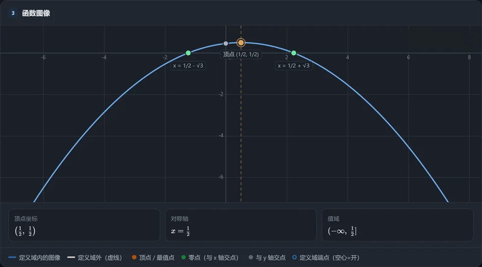
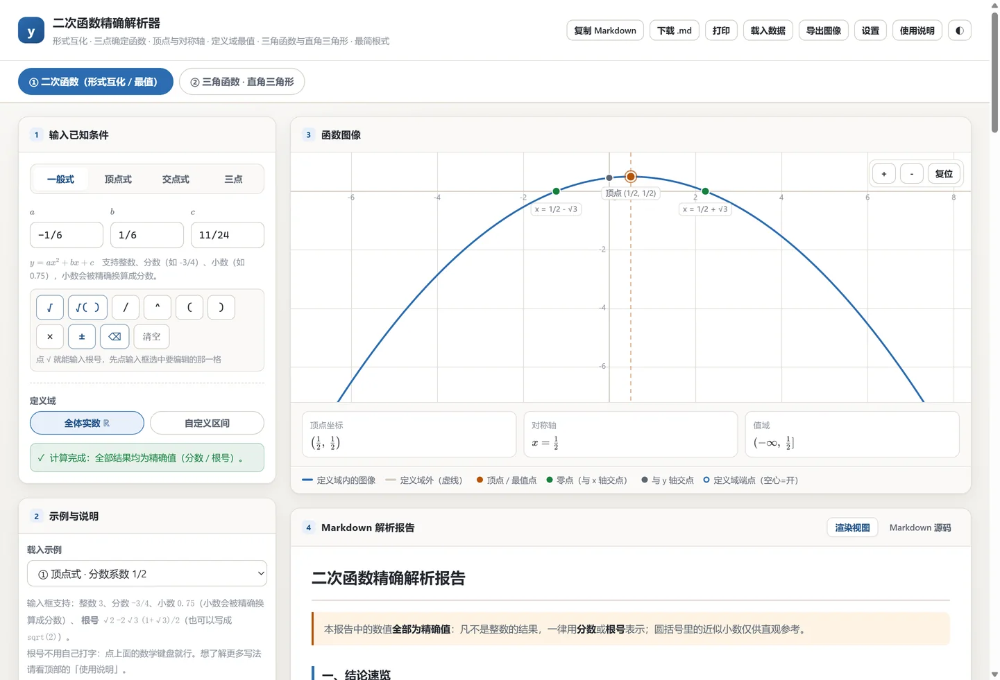
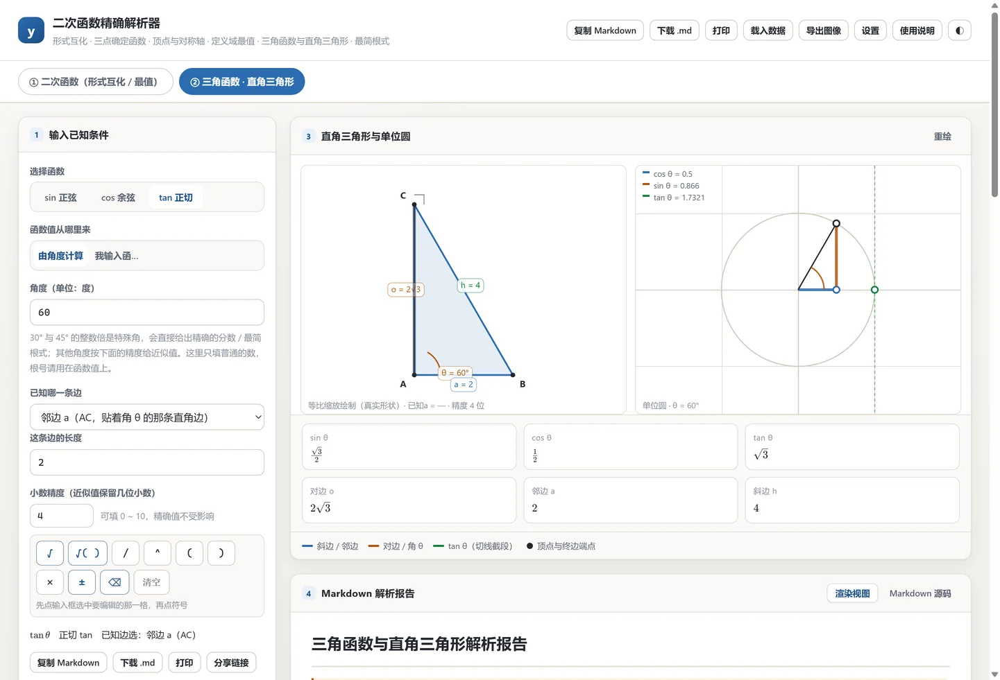
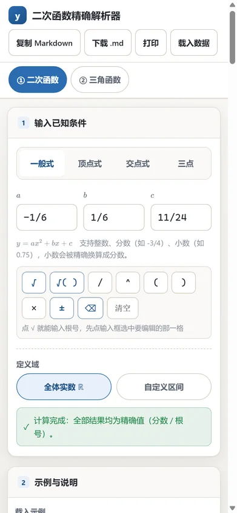
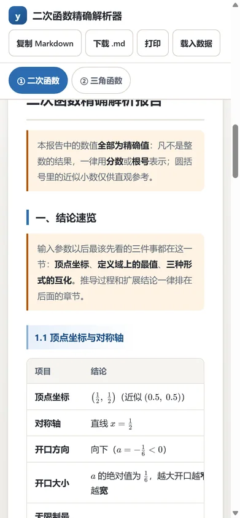

01
三种形式互化
一般式、顶点式、交点式一步互换，顶点、对称轴、开口方向同时给出。
$ax^2+bx+c \;\Longleftrightarrow\; a(x-h)^2+k \;\Longleftrightarrow\; a(x-x_1)(x-x_2)$
全程用有理数与最简二次根式运算。输入 $2x^{2}-4x-1$， 得到的是 $x = 1 \pm \dfrac{\sqrt{6}}{2}$， 而不是一个约等于的小数。近似值也有，但它只是附带，不是答案。
两行数值看起来一样，但上面那行在第 16 位就已经是错的，下面那行永远精确。

计算机里的 double 是二进制小数，写不下 1/3、0.1 这类值，
每一次运算都会留下一点点误差，再经过开方、判别式、配方，误差被放大。
本工具从头到尾只做分数与根式的精确运算，不存在这个环节。
用双精度浮点数求解
第 16 位开始失真。代入验算时残差不为 0，无法判断根是否真的是根； 根式化简、分母有理化、嵌套去根号这类操作更是无从谈起。
用有理数与二次根式求解
根式自动化简到最简形式，代入验算的结果严格等于 0。 结论里的每一个数都是闭式，抄到卷子上就是标准答案。
围绕「精确」两个字展开，不做花哨但算不准的功能。
一般式、顶点式、交点式一步互换，顶点、对称轴、开口方向同时给出。
判别式按有理数比较，开方结果自动化成最简根式，分母该有理化就理。
能写成有限根式的双层根号会替你拆开；拆不出来的会明确说「不能写成有限根式」，而不是塞个小数给你。
自定义定义域后，按顶点是否落在区间内分情况讨论，开区间端点、无界端都算得清清楚楚。
同一条引擎：特殊角给精确值，非特殊角按你设定的位数给近似值，并且会标出来是近似。
一键生成完整解答报告，含配方与因式分解详解、单调性、求解步骤与结果检验，可复制、下载或打印。
同一套代码，桌面与手机两副面孔；手机上连数学键盘都给你备好了，√ 不用自己想办法打。

√3 是算出来的精确根，不是四舍五入的结果。



点一下就开始下载，不用注册、不用登录。版本号与文件大小直接从 GitHub Releases 读取， 所以这里显示的永远是最新版。
适配 Android 7.0 及以上。安装包不申请任何权限，连联网权限都没有。
下载 APK一路下一步装完即用，自动建桌面快捷方式，以后可以在应用内检查更新。
下载 EXE解压到任意目录直接运行，不写注册表。适合放 U 盘，或没有管理员权限的电脑。
下载 ZIP在线版和下载版是同一套代码，功能完全一致，计算同样精确。 页面加载完就能用，数据不出本机。
在线版需要联网加载一次；下载版装好后永久离线可用，且不申请网络权限。
一个工具的可信度，一半来自它敢承认的边界。下面这些情况它不会糊弄你。
像 √(1+√2) 这种，数学上本来就写不成有限个根号相加的形式。
它会直接报「不能写成有限根式」，而不是给你一个假装精确的小数。
sin 37° 没有有限的根式表达。这时按你设定的位数给近似值，
并且会明确标注「近似」，不会混在精确值里。
三次及以上方程、无理方程不在范围内。这是刻意的：只把二次函数这一件事做到没有浮点误差。
没有账号系统，也就没有上传。安卓版连联网权限都没申请，装了之后它想联网也联不上。